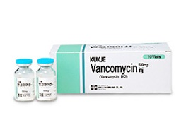

반코마이신
출처 : 약학정보원
유효균종 : 연쇄구균, 포도구균, 클로스트리듐 다이피셀, 디프테로이드균
적응증 : 페니실린계 및 세팔로스포린계 항생물질로 치료가 되지 않는 중증 감염증
용법/용량 : 성인 : 반코마이신으로서 1회 500mg(역가)을 6시간마다 또는 1회 1g(역가)을 12시간마다 정맥 점적주사한다.
부작용/주의사항 : 1. 일정한 시간에 일정한 간격으로 지속적 복용하여 균을 죽일 수 있는 최소한의 혈중농도를 유지해 주어야 함 2. 약물 사용 전 반드시 약물반응검사 (피부반응검사)를 시행해야 함